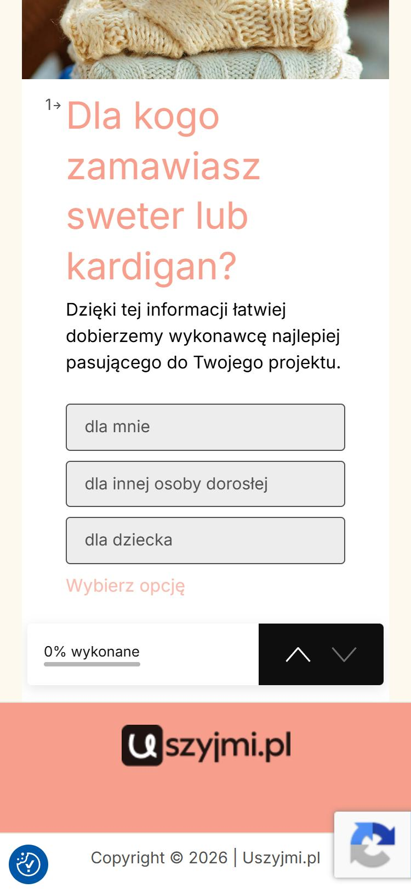
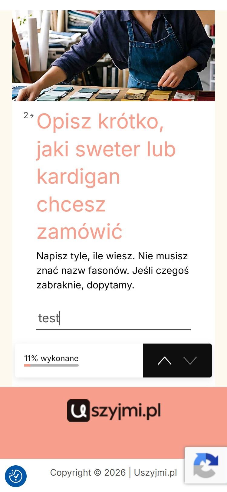

Uszyjmi.pl – wstępna diagnoza na telefonie
Sprawdzone 20.11.2026 na emulacji telefonu z Androidem (Chrome, ekran 375×812), bez wysyłania zapytań. To skrót – pełny audyt obejmie też komputer, szybkość i każdy krok wszystkich trzech formularzy.
1. Przewijanie „staje” na formularzu
Wszystkie trzy formularze to formularze krokowe (Fluent Forms w trybie konwersacyjnym), które zajmują prawie cały ekran telefonu. Gest przewijania wykonany na formularzu nie przesuwa strony – formularz zabiera go do przełączania pytań. Klientka, która chce przewinąć niżej albo wyżej, ma wrażenie, że strona się zablokowała. To najpewniej źródło zgłoszonego problemu z Androidem.

2. Podstrona formularza przez kilka sekund jest „blada”
Strona ładuje się w ok. 1,5 s, ale treść pojawia się animacją – jeszcze po 4 s nagłówek i opis są prawie przezroczyste. Na słabszym telefonie wygląda to, jakby strona się nie wczytała.
3. Brak widocznego przycisku „Dalej” w pytaniach opisowych
Przy pytaniu „Opisz krótko, jaki sweter lub kardigan chcesz zamówić” pod polem nie ma przycisku przejścia dalej. Jedyna droga to mała strzałka w czarnym pasku na dole – łatwo ją przeoczyć, a Enter na klawiaturze telefonu dodaje nową linię.

4. Długa droga do pierwszego pytania
Przycisk „Wybierz, co chcesz zamówić” na stronie głównej przewija tylko do trzech kategorii; formularz otwiera się na osobnej podstronie, a tam trzeba jeszcze kliknąć „Rozpocznij”. Na telefonie to kilka kroków, zanim klientka zobaczy pierwsze pytanie. Przy pierwszej wizycie dodatkowo baner cookies zasłania ten przycisk.
Przygotował: Marcin · diagnoza wstępna bez instrukcji naprawy – sposób poprawy i priorytety są częścią audytu.